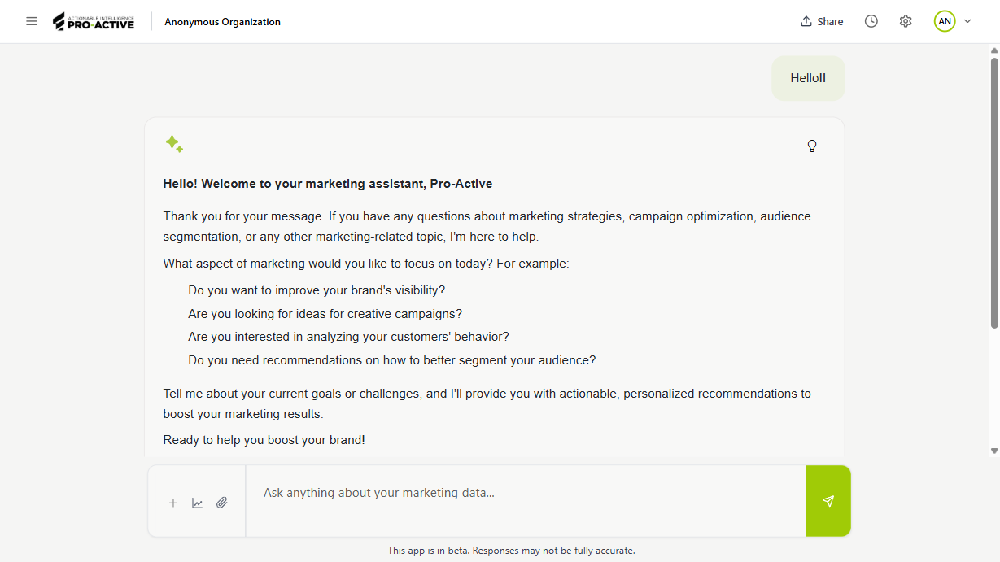
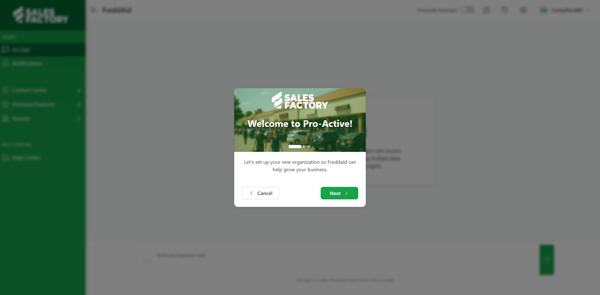

FreddAId | ProActive
Full-stack developer · Sales Factory
An AI assistant for B2B sales teams. Instead of digging through hundreds of internal documents, users ask a question in plain language and get an answer grounded in their own company data. The platform also generates brand and competitor reports on a schedule.
Technical detail and my contribution
The product lives across three repositories that make up one system: the web application, the AI orchestrator, and the Azure RAG infrastructure underneath.
1 · Web application
React 18 + TypeScript frontend (Vite) with a Flask backend organised by domain. AI chat with file attachments, a data-analyst mode and speech synthesis; per-organisation knowledge management; scheduled reports delivered by email; team, role and subscription administration.
- Migrated endpoints from the external orchestrator into the local backend (settings, invitations, current user) to cut latency and get proper error handling.
- Redesigned the subscription plans page and added in-app alerts for Stripe billing problems.
- Built the split-screen analysis panel with resizable panes so a document and the chat are visible at once.
- Set up the end-to-end test suite in Cypress covering onboarding, reports, knowledge sources, plans and team management.
- Per-organisation file limits, loading and error states for the service status check, sidebar active-section highlighting, and bundle size cleanup.
- Multiple web design creations
2 · AI orchestrator
Azure Functions in Python driven by LangGraph: query rewriting, augmentation with organisational context, tool selection (document search, data analysis, web scraping) and response generation streamed in real time. When intent is ambiguous the orchestrator pauses and asks for clarification instead of guessing (human-in-the-loop).
- Implemented the job scheduler that automatically produces competitor and product analysis reports, with unit test coverage.
- Refactored Azure Storage URL handling, including URL normalisation and a fix to the validation pattern.
- Hotfixed data-type mismatches and a report generation failure in production.
3 · Azure RAG infrastructure
Built on Microsoft's open-source GPT-RAG accelerator: document ingestion and vectorisation, semantic retrieval with Azure AI Search, and Bicep deployments in either a simple or a zero-trust network setup.
- Worked the infrastructure-as-code layer: Function App roles and permissions, Cosmos DB access for the reporting module, new containers, Event Grid wiring and log retention policies.
- Synced OpenAI and AI Search API versions and cleaned up Bicep templates.
